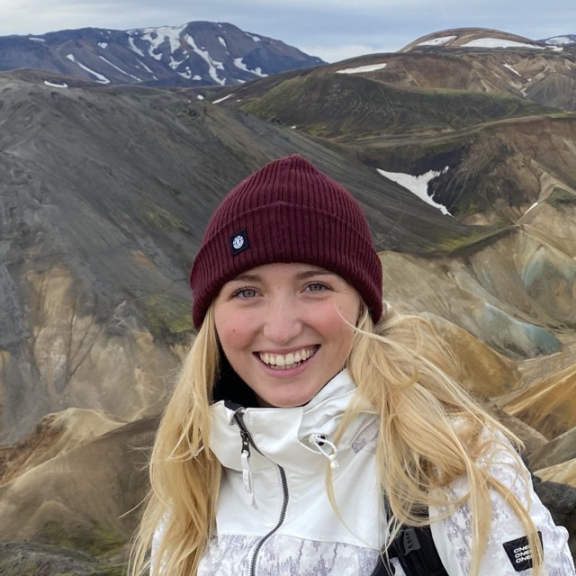

Neural Architecture Search
Designed novel zero-cost metrics and predictor-based NAS algorithms for robust architecture optimization under distribution shifts, for image and video tasks.

Rome, Italy
Applied Research Scientist Computer Vision Efficient AI Multimodal Models
I have a Ph.D. in Computer Science (summa cum laude), 5 years of research experience in deep learning, computer vision and neural architecture search, and 2.5 years of professional experience in AI engineering. I develop and evaluate efficient architectures for image and video understanding, run experiments on HPC infrastructure, and turn research into practical AI systems. I also teach deep learning and mentor Ph.D. researchers.
Designed novel zero-cost metrics and predictor-based NAS algorithms for robust architecture optimization under distribution shifts, for image and video tasks.
Developed differentiable augmentation techniques for transferring image representations to video recognition.
Designed SSH-UNet, a lightweight architecture for volumetric CT segmentation that outperforms multiple state-of-the-art methods with significantly fewer parameters.
Designed enterprise AI assistants based on agentic AI and multimodal document understanding for industrial knowledge management.
NAS Workshop, CVPR 2024 S. Casarin, O. Lanz, S. Escalera. “GRASP-GCN: Graph-Shape Prioritization for Neural Architecture Search under Distribution Shifts.”
Workshop on Fair, Data-efficient, and Trusted Computer Vision, CVPR 2024 C. I. Ugwu, S. Casarin, O. Lanz. “Fractals as Pre-training Datasets for Anomaly Detection and Localization.”
ICMVA 2024 S. Casarin, C. Ugwu. “DDS-NAS-Bench: Towards Predictors under Data Distribution Shift.”
ICMVA 2024 C. I. Ugwu, S. Casarin, O. Lanz. “Spatiotemporal Modeling Encounters 3D Medical Image Analysis: Slice-Shift UNet with Multi-View Fusion.”
International Symposium on Industrial Engineering and Automation 2024 E. Caruso, S. Casarin, T. Pfund, F. Schupp, O. Lanz. “Automated Visual Inspection via Differentiable Physically-Based Rendering Under Unknown Ambient Illumination.”
Workshop on Data Analysis in Life Science, ECML PKDD 2022 C. I. Ugwu, S. Casarin. “Italian Debate on Measles Vaccination: How Twitter Data Highlight Communities and Polarity.”
Swiss Conference on Data Science (SDS) 2022 S. Casarin, S. Baldoni, M. Carli, P. Zanuttigh, F. Battisti. “Unsupervised Network Anomaly Detection by Learning on 2D Data Representations.”
Division of Language and Vision Machine Learning, Rome
Department of Information Engineering (DEI)
Implementation, optimization and testing of an unsupervised anomaly detection system. The algorithm was tailored to the 2D representation of real traffic data and optimized for the final goal of detecting malicious events.
Outcome: publication at the 9th Swiss Conference on Data Science (SDS), 2022.
Sony Europe B.V. Zweigniederlassung, Stuttgart, Germany
Outcome: publications at the International Conference on Machine Vision Applications (ICMVA) and at the NAS workshop at CVPR, and an oral presentation at the DMLR workshop at ICLR.
Graduated summa cum laude
Thesis: “Designing Task-Aware and Domain-Adaptive Neural Architectures: From Neural Architecture Search to Structural Modeling Across Shift Constraints and Modalities.”
Department of Information Engineering (DEI) · Graduated summa cum laude
Thesis, in collaboration with Sony: “Predictor-based Neural Architecture Search under Data Distribution Shift.”
Developed a cross-dataset NAS benchmark with architectures trained on four datasets and investigated predictor transferability under distribution shifts. Proposed few-shot predictor fine-tuning strategies that improve NAS performance with minimal additional architecture evaluations.
Supervisor: Pietro Zanuttigh · Co-supervisor: Lukas Mauch
Competition · 1st place on 10 of 11 datasets
ML automation · End-to-end pipelines · Optimization · Computational efficiency · Benchmarking · Large-scale experimentation
Medical imaging · 6M parameters
Designed a parameter-efficient deep learning architecture for volumetric CT segmentation, replacing computationally expensive 3D convolutions with a multi-plane 2D CNN enhanced with Temporal Shift Modules (TSM).
Impact: performance superior to 5 of 6 state-of-the-art models with only 6M parameters, compared with 31M–150M for competing approaches.
Deep learning · Model optimization · Efficient AI · Computer vision · PyTorch · Architecture design · Resource-aware ML
HPC · CINECA
Proposed and secured access to CINECA HPC infrastructure to develop and evaluate NAS methods for video action recognition, designing experiments to efficiently explore large architecture search spaces.
Impact: investigated proxy metrics to estimate architecture quality without fully training candidate models, targeting substantial reductions in the cost of large-scale architecture evaluation.
HPC · Distributed experimentation · Computational optimization · Proxy metrics · ML experimentation · Computer vision · Scalable AI